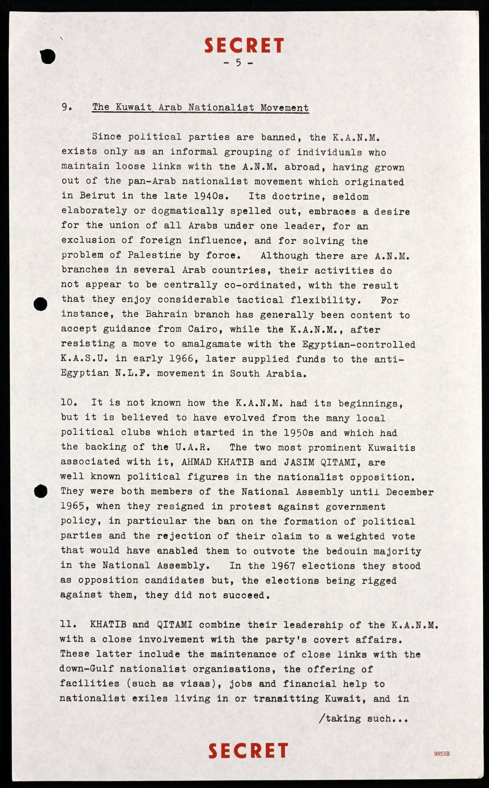

١٩٦٧ إلى ١٩٦٨ · تقرير استخباراتي سري لمجلس الوزراء البريطاني عن الأمن في الخليج
الاستخبارات البريطانية عن حركة القوميين العرب في الكويت
ما هي
يذكر التقرير أحمد الخطيب وجاسم القطامي بوصفهما أبرز كويتيين في فرع حركة القوميين العرب في الكويت، ويشير إلى استقالتهما من المجلس في ديسمبر ١٩٦٥ احتجاجا على حظر الأحزاب، وإلى أن انتخابات ١٩٦٧ زُوّرت ضدهما.
أهميتها
حتى الاستخبارات البريطانية سجلت صراحة أن انتخابات ١٩٦٧ زُوّرت ضد جاسم.
من المقصود
هو جاسم القطامي نفسه الوارد اسمه الكامل في وثائق أخرى: مدير الشرطة الذي استقال وقت أزمة السويس، ثم النائب القومي في مجلس الأمة.
صور الصفحات


النص الأصلي
ملاحظات
تذكر الصفحة ٣٨ من التقرير نفسه الخطيب والقطامي مرة أخرى بوصفهما جهة اتصال في الكويت لقوميين من الإمارات المتصالحة. وهذه الصفحة محفوظة مع هذا السجل.
أسماء أخرى
المصادر
الأرشيف الوطني البريطاني في لندن، رقمنه الأرشيف الرقمي للخليج العربي (agda.ae). الصور منشورة بإذن من الأرشيف الوطني البريطاني.
مرجع الأرشيف
- CAB 163/73 · Middle East: security threat to the Persian Gulf; intelligence reports
كيف كُتب هذا النص: نُسخ من قراءة الأرشيف لنص الصورة، وصُحح بالمقارنة مع الصورة حيث كانت القراءة مشوهة. وتشير … إلى نص محذوف. الترجمة العربية من Claude، يرجى مراجعتها.
افتح في الموقع التفاعلي